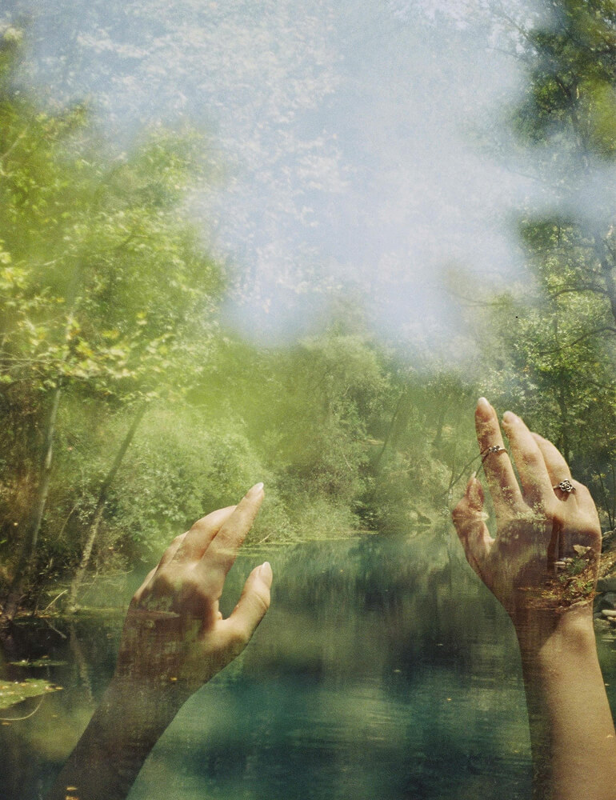
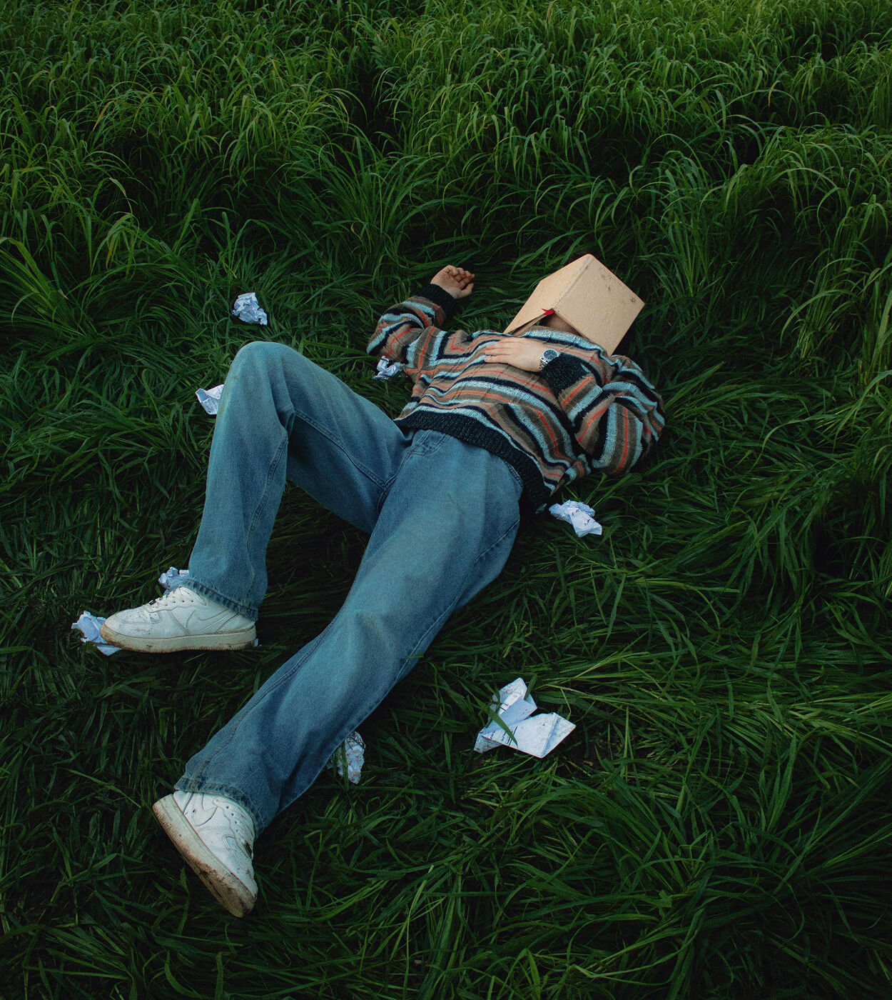
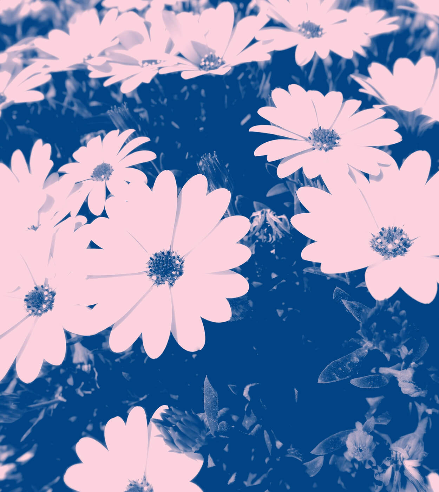
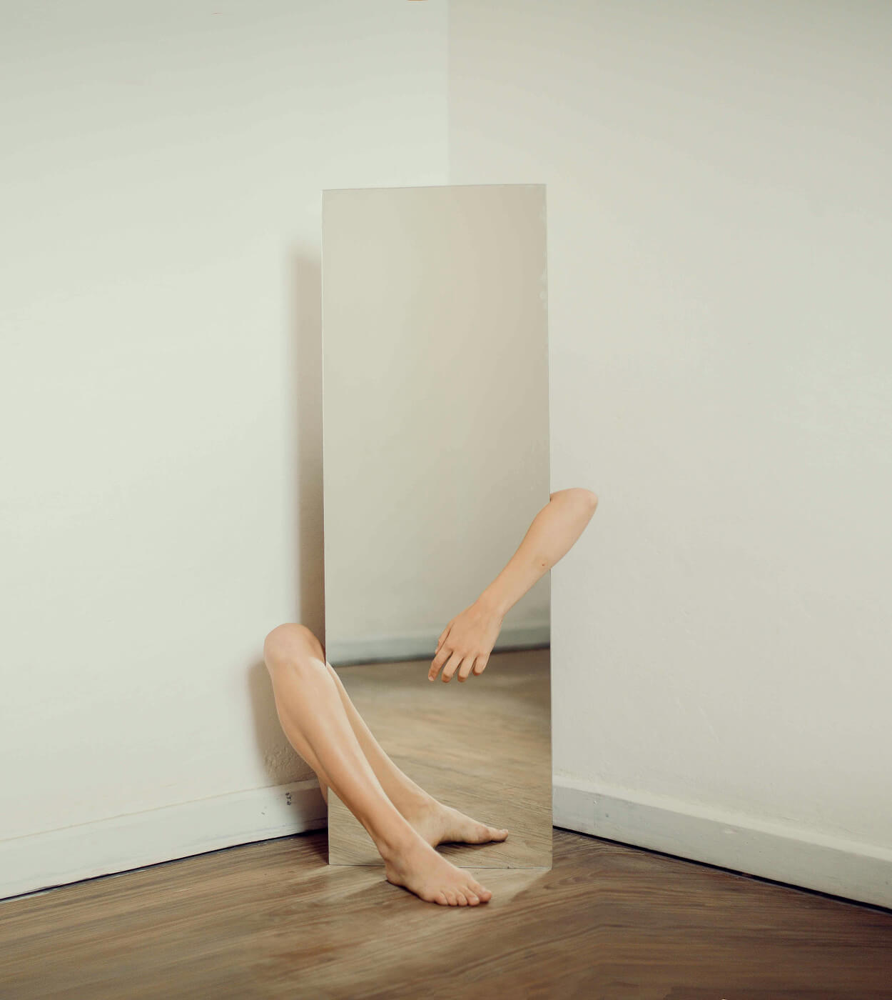
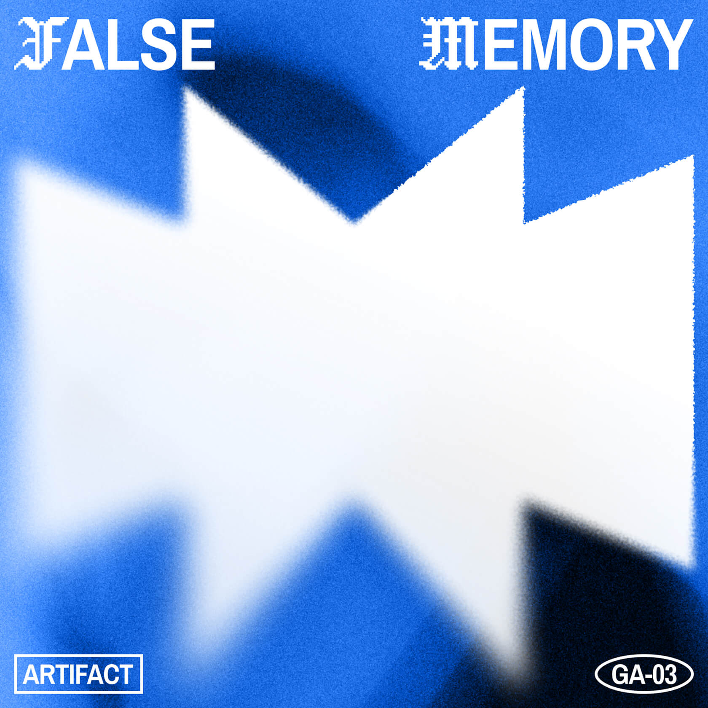

View all
Featured
Album

False Memory by Artifact
Listen now
Cinema
Selects
| Film | Year | Mood | Why watch |
|---|---|---|---|
| Static Bloom | 2004 | Hazy, melancholic | For the light leaks and long silences |
| Glass Rerun | 1998 | Dreamlike, looping | Feels like déjà vu on VHS |
| Cold Century | 2024 | Stark, restrained | A political breakup wrapped in fog |
| Wires in the Grass | 1988 | Pastoral, eerie | Folk horror meets sci-fi |
| Blue Minor | 2001 | Intimate, jazzy | Mood-driven editing and a killer score |
| False Dawn | 2025 | Bleak, slow burn | A sunrise that never delivers |
| Hyperfield | 1993 | Lush, glitchy | The glitch is the emotion |
| Nocturne Number 5 | 1980 | Slow, romantic | A love story told entire at night |